| ID | 問題 | 答え | 解説 |
|---|---|---|---|
| Lv05_Ca014_0001 | 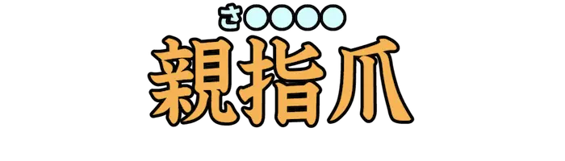 |
さむねいる | 特定の視覚的情報を表示する際に、視認性を高めるため縮小させた見本となる画像。 |
| Lv05_Ca014_0002 | みりたりー | 『軍の』『軍人の』を表した語。また、軍服を連想させるファッションスタイル。 | |
| Lv05_Ca014_0003 | ぽんぽんぺいん | お腹が痛むこと。腹痛。ハライタ。『ぽんぺ』と略されるらしい。 | |
| Lv05_Ca014_0004 | えーす | 第一人者や、主戦力となる優秀な人材。また、トランプで１の札。Ａ。 | |
| Lv05_Ca014_0005 | 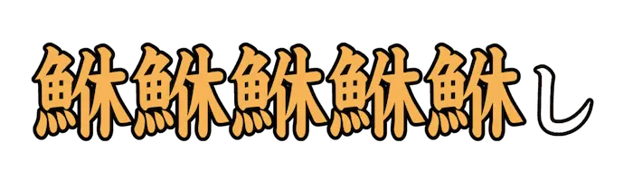 |
ごりお | 受け手の意向を無視して、自分の主張を無理矢理に押し通そうとすること。 |
| Lv05_Ca014_0006 | 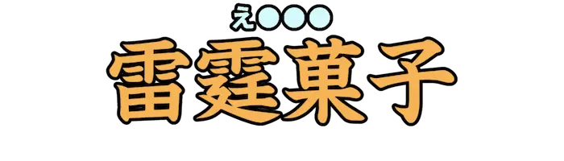 |
えくれあ | 細長いシュー皮にカスタードなどを挟んだ洋菓子。フランス語で『稲妻』を意味する。 |
| Lv05_Ca014_0007 | とりにとろとるえん | トルエンのニトロ化合物。ＴＮＴ火薬の主成分となる。 | |
| Lv05_Ca014_0008 | 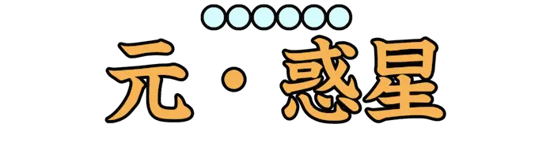 |
めいおうせい | 太陽系外縁天体のひとつ。２００６年までは太陽系の第９惑星であった。 |
| Lv05_Ca014_0009 | いたりっく | 斜めに傾けて表す、書体の形式のひとつ。 | |
| Lv05_Ca014_0010 | 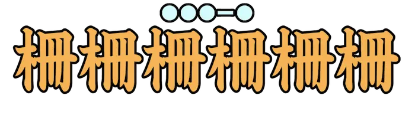 |
ばりけーど | 戦争などにおいて、相手の侵入を防ぐために築かれる障害物。 |
| Lv05_Ca014_0011 | れもねーど | レモンの果汁に砂糖、蜂蜜、シロップなどを加え、冷水で割った甘い飲み物。 | |
| Lv05_Ca014_0012 | ほっきょくうさぎ | ウサギ目ウサギ科の動物。立ち上がった姿が衝撃的なことで知られる。 | |
| Lv05_Ca014_0013 | しみゅらくら | 逆三角形の頂点上に置かれたものが両目と口に見える、防衛本能に基づく現象。 | |
| Lv05_Ca014_0014 | 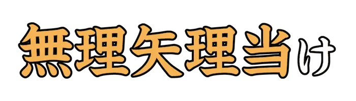 |
こじつ | 関係のないことなどを結びつけること。この問題のように。 |
| Lv05_Ca014_0015 | ばっぐくろーじゃー | 食パンなどの入った袋を留めるアレ。 | |
| Lv05_Ca014_0016 | 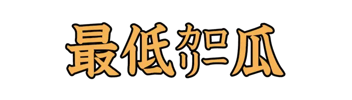 |
きゅうり | ギネスにおいては、栄養面ではなく『世界一㌍の低い野菜』で登録されている。 |
| Lv05_Ca014_0017 | 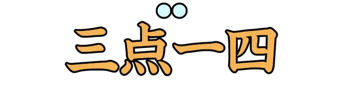 |
ぱい | 円の直径に対する円周の長さの比率のこと。ギリシャ文字で『<π|パイ>』と表すことが多いよ。 |
| Lv05_Ca014_0018 | 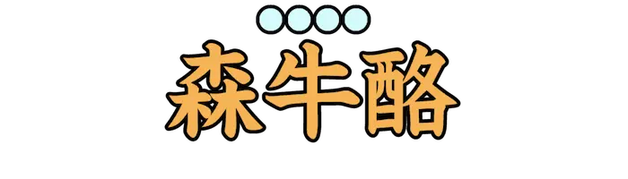 |
あぼかど | クスノキ目クスノキ科の常緑高木。鳥類のいるご家庭では持ち込まないように。 |
| Lv05_Ca014_0019 | 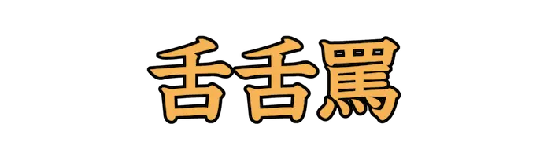 |
べろべろばー | 幼児をあやすときの語。相手をからかうときにも使われる。 |
| Lv05_Ca014_0020 | 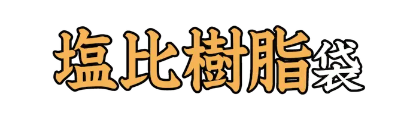 |
びにーる | ビニル基を有する化学物質でできた高分子化合物を用いた袋。 |
| Lv05_Ca014_0021 | ぱく | 人のものをかすめ取る。かっぱらう。 | |
| Lv05_Ca014_0022 | そのひぐらし | その日にかせいだ金で、その日を送る貧しい暮らしのこと。 | |
| Lv05_Ca014_0023 | 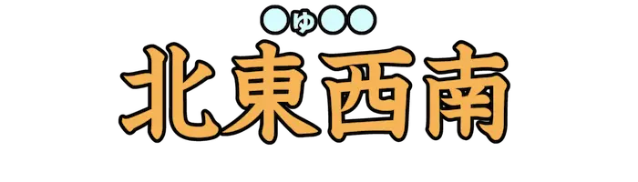 |
にゅーす | 『N[(北)]』『E[(東)]』『W[(西)]』『S[(南)]』なので。 |
| Lv05_Ca014_0024 | らせんかいだん | 円形の壁、もしくは柱を中心に配置した階段の総称。 | |
| Lv05_Ca014_0025 | がっか | 自分の思い通りにならず落胆するさま。また、とても疲れている様子。 | |
| Lv05_Ca014_0026 | どっき | 突然の出来事に対し、驚き縮み上がること。また、そのような反応を見世物にする企画。 | |
| Lv05_Ca014_0027 | 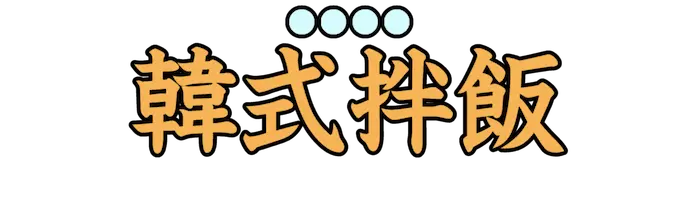 |
びびんば | 대한민국의국민음식가운데하나로여겨진다. |
| Lv05_Ca014_0028 | まがりなり | 不完全ながら。どうにかこうにか。 | |
| Lv05_Ca014_0029 | ぴかいち | 抜きんでて優れていること。もとは花札の用語。 | |
| Lv05_Ca014_0030 | 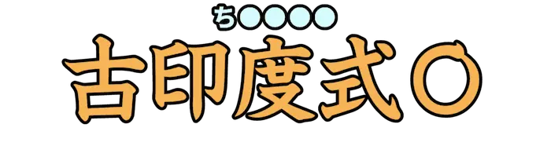 |
ちゃくらむ | 古代インドで使われた<投擲|とうてき>武器のひとつ。穴の開いた円盤の外側に刃が付いている。 |
| Lv05_Ca014_0031 | 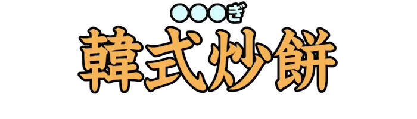 |
とっぽぎ | お餅を使った韓国料理。また、떡면을주재료로하는한국요리이다. |
| Lv05_Ca014_0032 | 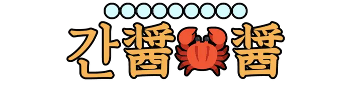 |
かんじゃんけじゃん | 생꽃게를소금,간장양념에담가숙성시킨요리. |
| Lv05_Ca014_0033 | 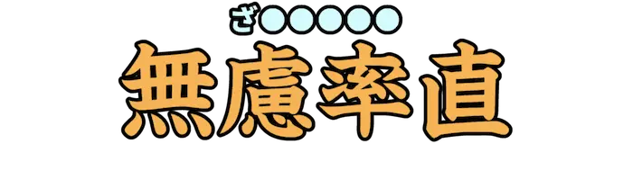 |
ざっくばらん | もったいぶったところがなく、素直に心情を表すさま。 |
| Lv05_Ca014_0034 | ぷらまいぜろ | 増減を繰り返し、最初と変わらない状態。最終的に収支が釣り合うこと。 | |
| Lv05_Ca014_0035 | 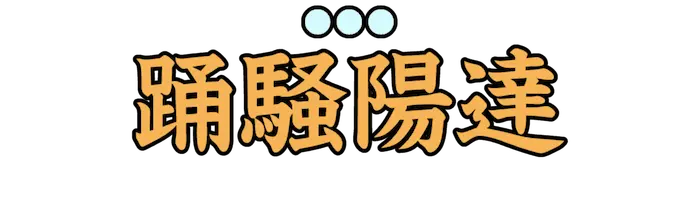 |
ぱりぴ | 『パーリーピーポー』の略。様々な機会に集まって、楽しそうに騒ぐ若者の総称。 |
| Lv05_Ca014_0036 | 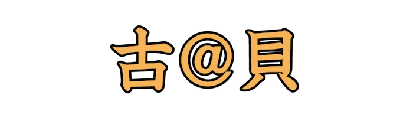 |
あんもないと | アンモナイト目の動物。古生代シルル紀に現れたとされる。 |
| Lv05_Ca014_0037 | 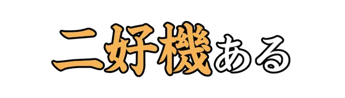 |
つーちゃん | 『ワンチャン』に対し、『二回チャンスがある』という意味を表した語。 |
| Lv05_Ca014_0038 | 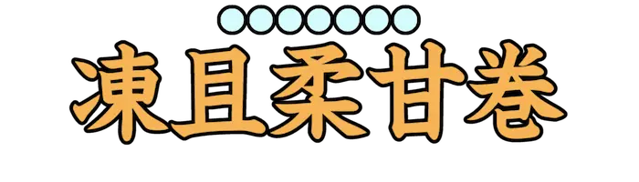 |
そふとくりーむ | 柔らかい食感のアイスクリーム。主に巻きソフトのことを指す。 |
| Lv05_Ca014_0039 | となかい | クジラウシ目シカ科の動物。シカ科で唯一オス、メス共に角がある。 | |
| Lv05_Ca014_0040 | せいうち | 食肉目セイウチ科の動物。北極圏の沿岸地帯や氷縁部に生息する。 |